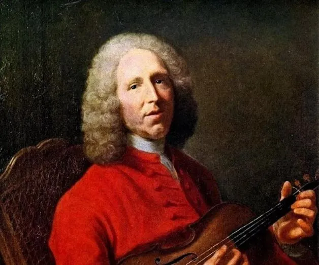
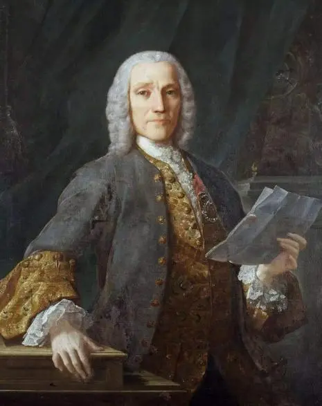

拉莫与D·斯卡拉蒂
在音乐史上，从1690年—1750的这段时间，被称为“巴洛克晚期”。在这一时期有几位大师将巴洛克音乐发展至一个新的高度， 其中比较有重要的是拉莫、D·斯卡拉蒂、亨德尔、巴赫。比较有趣的是，后三位是同年出生的（1685），拉莫也只比他们大两岁。

一、拉莫
让-菲利普·拉莫（Jean-Philippe Rameau，1683—1764）是法国18世纪最重要的作曲家、理论家、键盘乐器演奏家。
拉莫从小就和他在教堂当管风琴师的爸爸学习音乐，他的父母曾希望他学习法律，但是拉莫的兴趣还在音乐，到了18岁时，他的父母才同意他走音乐这条路。拉莫从19岁到39岁期间，往返于法国的阿维农、奥弗涅、巴黎、第戎担任管风琴师， 并在期间创作了一卷羽管键琴作品。39岁到43岁期间，完成了他的两部理论著作《和声学》和《音乐理论的新体系》。
在拉莫43岁时，拉莫结婚啦，他这一时期主要靠教课和给人配乐赚钱。他48岁时经人介绍，到了当时的富翁和艺术保护人普普利尼埃尔（Alexandre-Jean-Joseph Le Reiche de la Poupliniere，1693—1762）家里工作，主要负责作曲、教课，以及乐队相关工作，这份工作持续了22年，在期间他创作了一些歌剧， 比如《希波利特与阿丽西亚》（1733）、《殷勤的印度人》（1735）、《双子星座》（1737）、《青春女神的节日》（1739）、《纳瓦尔公主》（1745）等。
拉莫的歌剧创作继承了之前吕利歌剧创作特征的同时，也进一步为了加强戏剧效果而做了很多改变，比如：他的歌剧的合唱和娱乐性歌舞场面更加突出，宣叙调的旋律更加丰富，广泛的运用调性和和声。等等。这使得他的作品在当时的法国受到了很多争议。 但比较好的是，法国国王非常喜欢拉莫的歌剧，并且得到了资金和荣誉。在拉莫81岁的时候，被封为贵族，他于同年在巴黎逝世。
拉莫在音乐史上最大的成就是他在39岁发表的理论著作《和声学》，这部著作中，他将理论与实践结合，真正的将“和声”作为一种理论来看待。他在著作中确立了很多和声的理论基础，至今仍然适用，比如：一个振动体，产生震动后会有泛音，泛音会有一个泛音列，在泛音列的第1、2、4个泛音是协和的，他们结合在一起，便组成了和弦。由此，产生三和弦；和弦是由三度叠置构成的；和弦可以进行扩展变成七和弦； 决定和弦性质的是它的根音；转位和弦性质不变；主、属、下属和弦是最核心的和弦。等等。由《和声学》开始，西方音乐的创作进入到了一个新的阶段。
二、D·斯卡拉蒂

D·斯卡拉蒂（Domenico Scarlatti，1685—1757）是音乐家亚历山大·斯卡拉蒂（A·斯卡拉蒂）的儿子，出生于意大利的那不勒斯。
D·斯卡拉蒂早期的音乐训练可能来自于他的父亲A·斯卡拉蒂。他早年曾在威尼斯和罗马的贵族宫廷工作，创作了一些宗教作品和世俗作品。在他35岁左右的时候，他离开了意大利移居到葡萄牙，在葡萄牙里斯本的教堂担任乐长， 同时也负责葡萄牙国王的女儿和弟弟的音乐教育。D·斯卡拉蒂约555首键盘奏鸣曲都是为了这一时期教学而创作的。
在他44岁时，他教导的公主远嫁到了西班牙，他也回到了马德里为西班牙宫廷服务，并在那结束了余生。值得一提的是，D·斯卡拉蒂的爸爸控制欲很强，在D·斯卡拉蒂年轻的时候，经常想要控制D·斯卡拉蒂的人生和工作发展， 但当时D·斯卡拉蒂并没有听从父亲的安排，到最后是通过法律手段才解除了他爸爸对他的控制。
D·斯卡拉蒂最具代表性的作品就是他的键盘奏鸣曲，他的键盘奏鸣曲绝大多数都是为羽管键琴而作的。他的键盘奏鸣曲在当时来讲有很多突破，比如：都是单乐章；开始使用不协和的和声；使用带有“再现”的二部曲式。等等。这些突破， 特别是使用带“再现”的二部曲式，为后来的古典奏鸣曲式的形成奠定了基础。